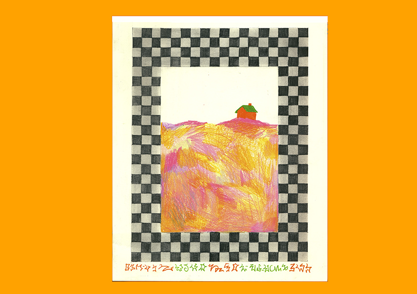
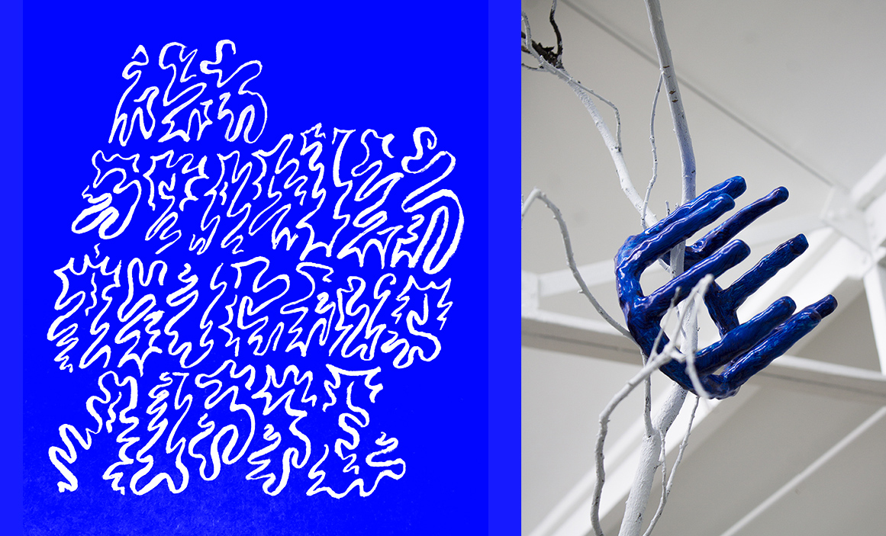
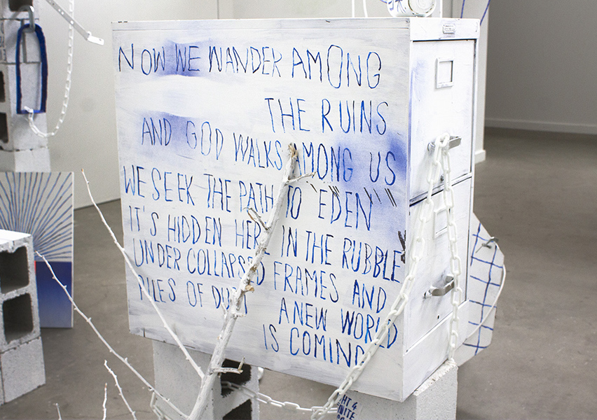

Salut ! My name is Raphaël Lewi.
I grew up in the eastern neighborhood of Paris, France before moving to the west coast as a teen.
I was raised in a religious Jewish household, with religion being a big part of my childhood. I learned to read Hebrew, went to synagogue, and studied the Talmud. I have… mixed feelings about my religion. But it let me glimpse into the Kabbalah and Jewish Mysticism, which I became fascinated with.
In Paris, I got to take drawing lessons at the prestigious Ecole des Beaux-Arts. At 18, having developed no skills of my own, I resolved to become an artist.
The next years are a bit of a whirlwind. I first studied graphic design, then attended a small Oregon art school (OCAC - rest in peace !) I tried all sorts of mediums, from letterpress to soft sculpture - loving all of them but never fully able to commit to one. My thesis project mixed apocalyptic symbology, anti-capitalist fiction, and mediocre paintings. My friend & I ran a DIY art gallery in an unused government-owned building, where we put up more than a dozen shows before being kicked out.
This was the era of covid, and I started reading a lot more. I read about Animism, Gnosticism, and Zoroastrianism. I read about sacred geometry, early monotheists, lesser prophets, the book of Revelation, industrial-era mystics, and Internet cults. I became an amateur scholar of the Esoteric, which continues to be my main source of inspiration today.
Somewhere along the way, I realized I may never make it as a professional artist. A little later, I realized it doesn't matter. I kept making art, published a magazine, learned to play chess, started a business, fell in love. I started drawing and stopped and started again. I got a studio with my friends, where I currently work on a practice of collages, drawings, and sculpture. Oh, and I made this website.

ABOUT ME


THINGS OF INTEREST (WIP)






